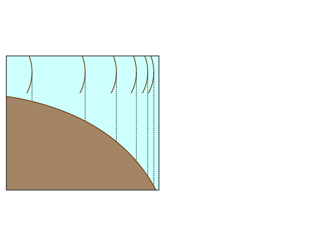
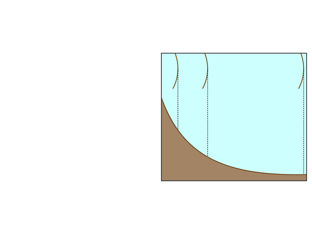

Recognising contour patterns
Slopes can be:
- Steep – contours are close together
- Gentle – contours are far apart
- Uniform – contours are evenly spaced
- Concave – contours are close together (steeper) at higher
ground
- Convex – contours are far apart (gentle slope) at higher
ground
| Convex slope |
Concave slope |
|  |
 |